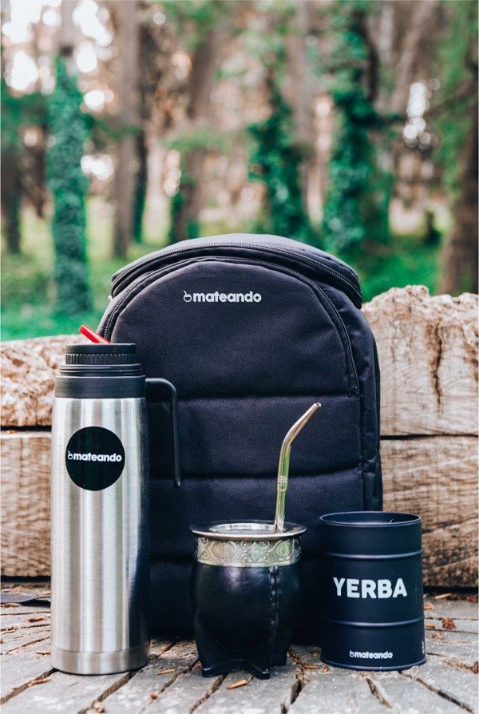
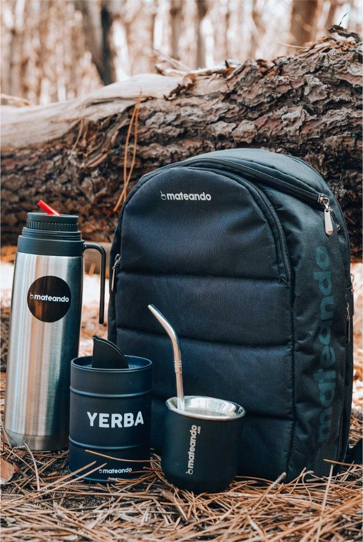
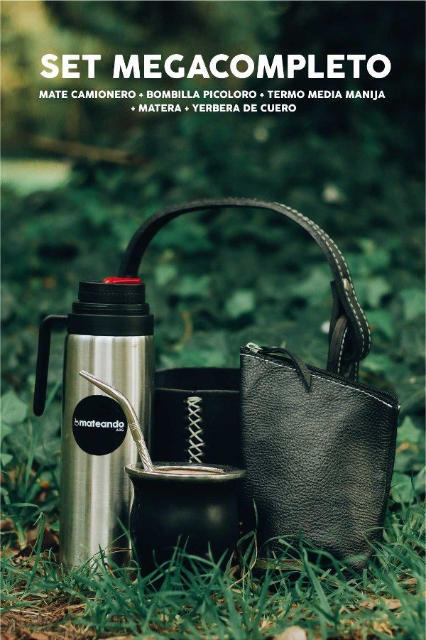
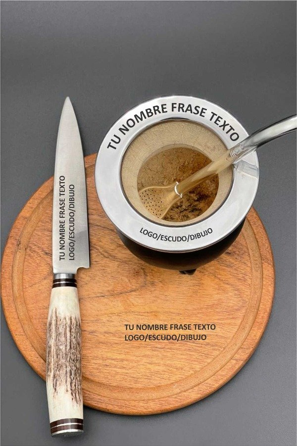

ACCESORIOS 🧉


Combo Matero 1
$9000
3 cuotas sin interés de $6000

Combo Matero 2
$15000
3 cuotas sin interés de $5000

Combo Matero 3
$21000
3 cuotas sin interés de $6000

Combo Matero 4
$6000
3 cuotas sin interés de $2000